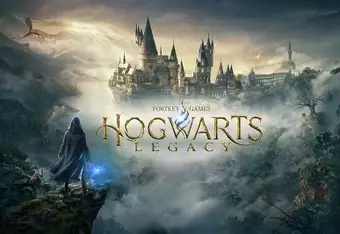

Hogwarts Legacy es un RPG de acción en mundo abierto ambientado en el universo de los libros de Harry Potter, donde los jugadores toman el control de su propio destino en el mundo mágico del siglo XIX.
En este título desarrollado por Avalanche Software, asumes el papel de un estudiante que ingresa tardíamente al quinto año en el Colegio Hogwarts de Magia y Hechicería. Tu personaje posee una rara habilidad para percibir y dominar una antigua y misteriosa magia ancestral.
La trama gira en torno a una peligrosa rebelión de duendes liderada por Ranrok, quien se ha aliado con magos tenebrosos. Junto a tus compañeros y profesores, deberás desentrañar secretos olvidados, enfrentarte a temibles criaturas y decidir qué clase de hechicero o hechicera quieres ser.
El juego ofrece una libertad sin precedentes para explorar cada rincón del castillo de Hogwarts, el pueblo de Hogsmeade, el Bosque Prohibido y las Tierras Altas circundantes. Los jugadores pueden asistir a clases para aprender nuevos hechizos, preparar pociones, volar en escoba, dominar bestias fantásticas y personalizar por completo su varita y su sala común.
